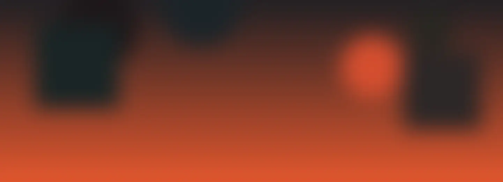

Vopsitorie auto
Culoare și finisajPasul 1/4
Vopsire integrală sau pe elemente, în cabină. Discutăm despre suprafețele de refăcut și nuanța potrivită pentru mașina ta.

Vopsitorie, tinichigerie și reparații auto în Constanța. De la primul detaliu, până la ultimul strat.
Scrie un cod HEX (ex. 1C3F94) sau alege din paletă.
Simulare vizuală pe un model concept. Nuanța finală se stabilește la atelier.
Culoare și finisajPasul 1/4
Vopsire integrală sau pe elemente, în cabină. Discutăm despre suprafețele de refăcut și nuanța potrivită pentru mașina ta.
Formă și caroseriePasul 2/4
Îndreptări, suduri și reparații de caroserie. Evaluarea la atelier stabilește ce intervenție este potrivită pentru elementele afectate.
Funcționalitate și întreținerePasul 3/4
Schimb de piese și lucrări de întreținere. Spune-ne ce ai observat la mașină pentru a discuta verificările necesare.
Luciu și atenție la detaliiPasul 4/4
Polish pentru zgârieturi fine și îngrijire interior/exterior. Starea suprafeței determină ce rezultat se poate obține.
Un loc pentru lucrările noastre. Deocamdată, o explorare vizuală a serviciilor.
Galerie demonstrativă: imaginile sunt generate cu AI și nu reprezintă lucrări Nova. Vor fi înlocuite cu fotografii reale, aprobate.
Fiecare mașină are povestea ei. Hai să vedem de ce are nevoie a ta.
Sună-ne și descrie pe scurt mașina și intervenția care te interesează.
Discutăm disponibilitatea și detaliile unei vizite la atelier.
Cere detalii despre soluție, cost și termen înainte de a decide.
Sună-ne pentru a verifica ce sprijin îți putem oferi în cazul tău și ce documente sunt necesare. Condițiile pentru RCA sau CASCO se discută direct cu atelierul.
Primul pas e o conversație. Pentru o evaluare sau o programare, sună-ne.
0700 001 001Strada Exemplului nr. 11, Constanța
Confirmă telefonic disponibilitatea înainte de vizită.